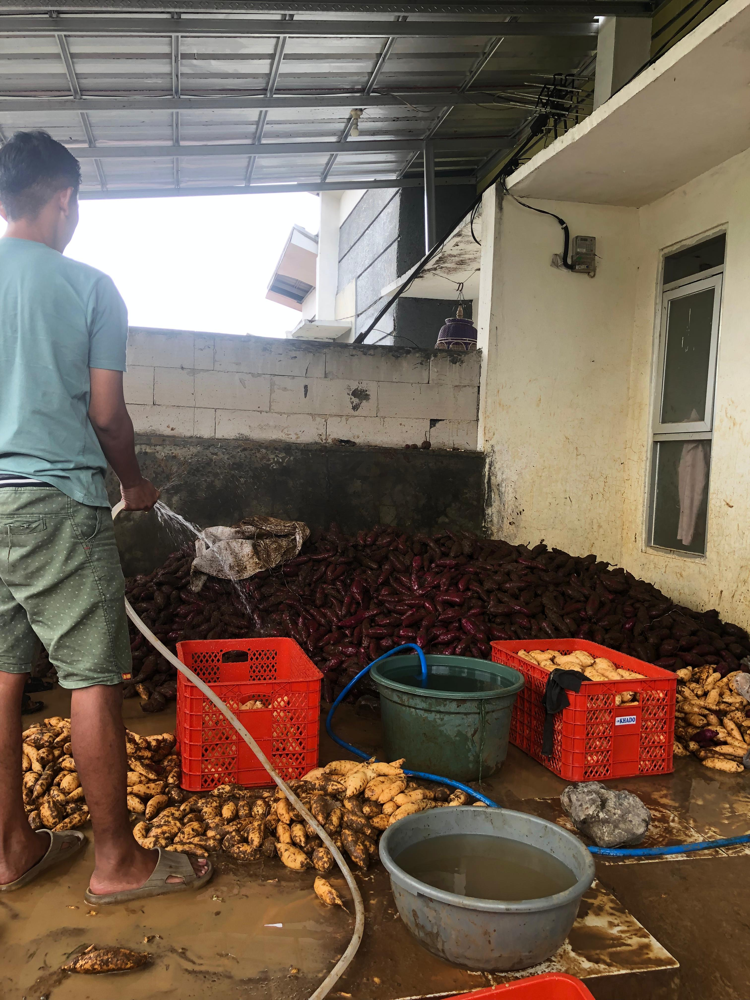
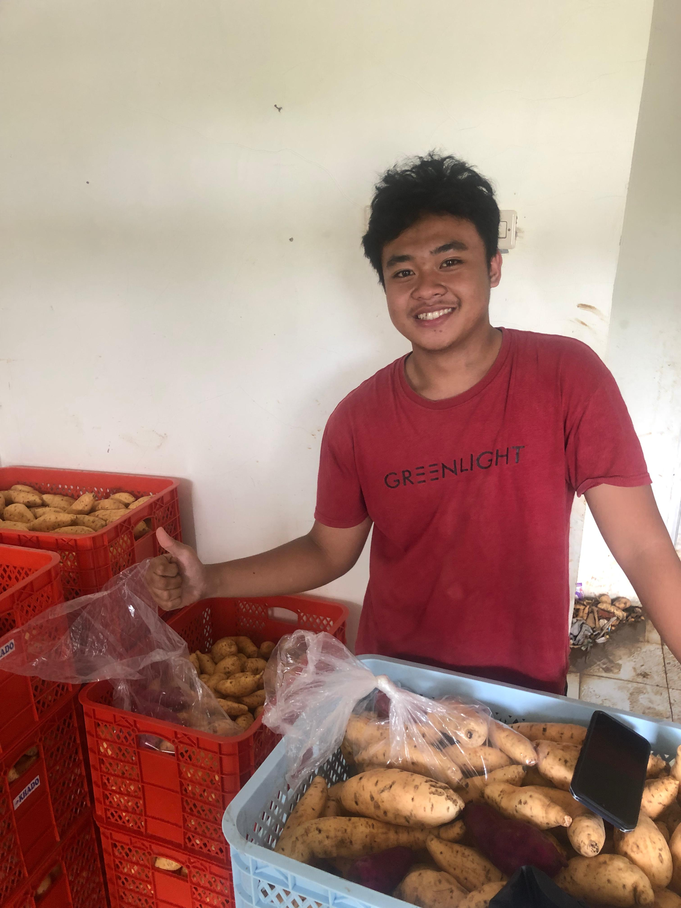
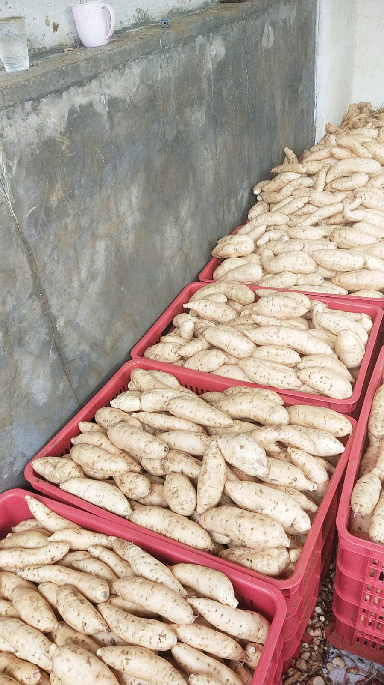
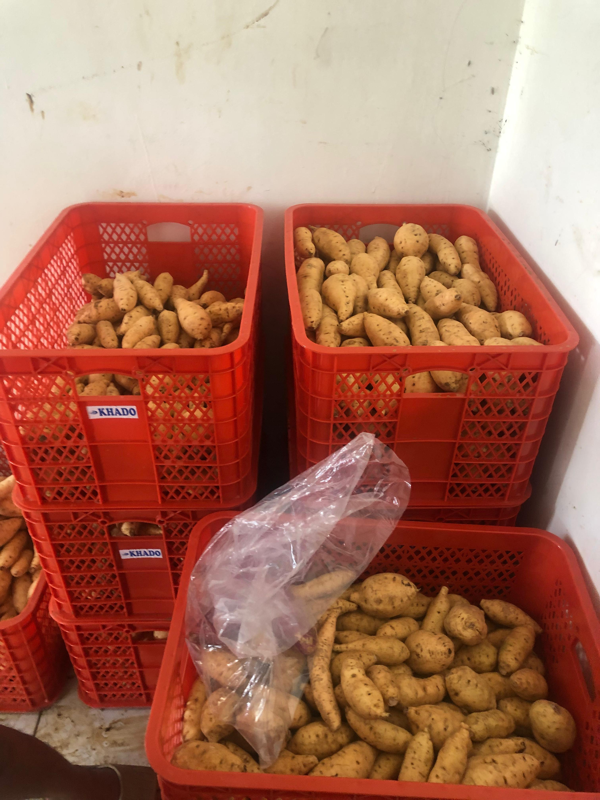
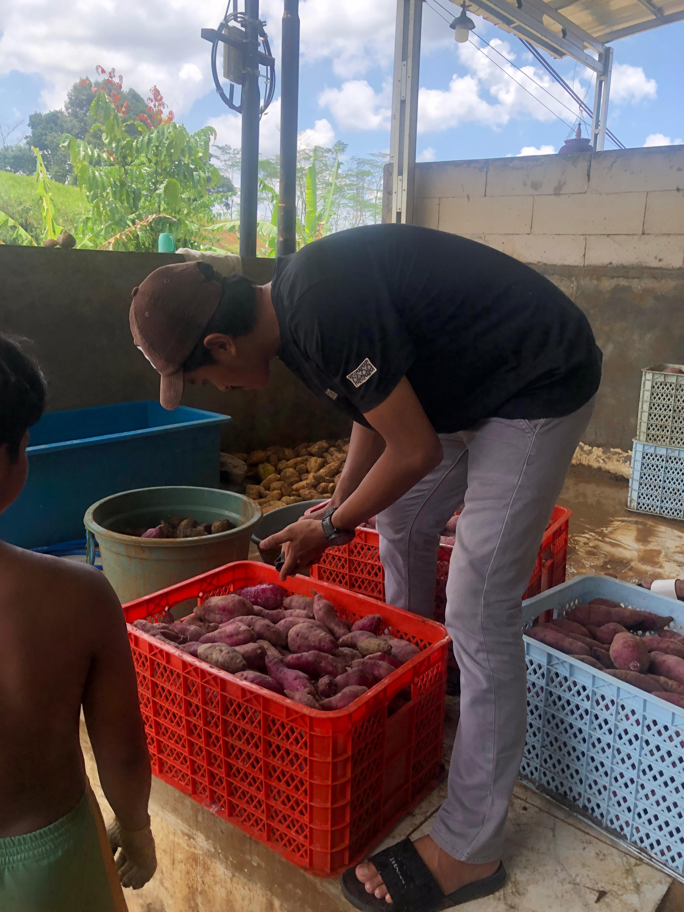
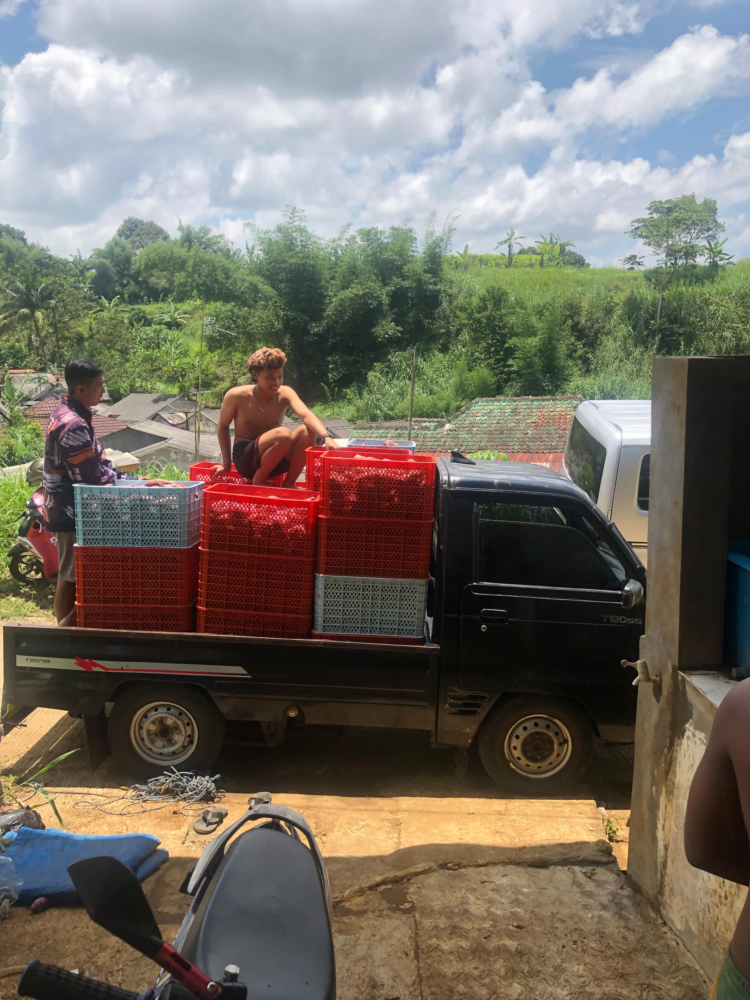
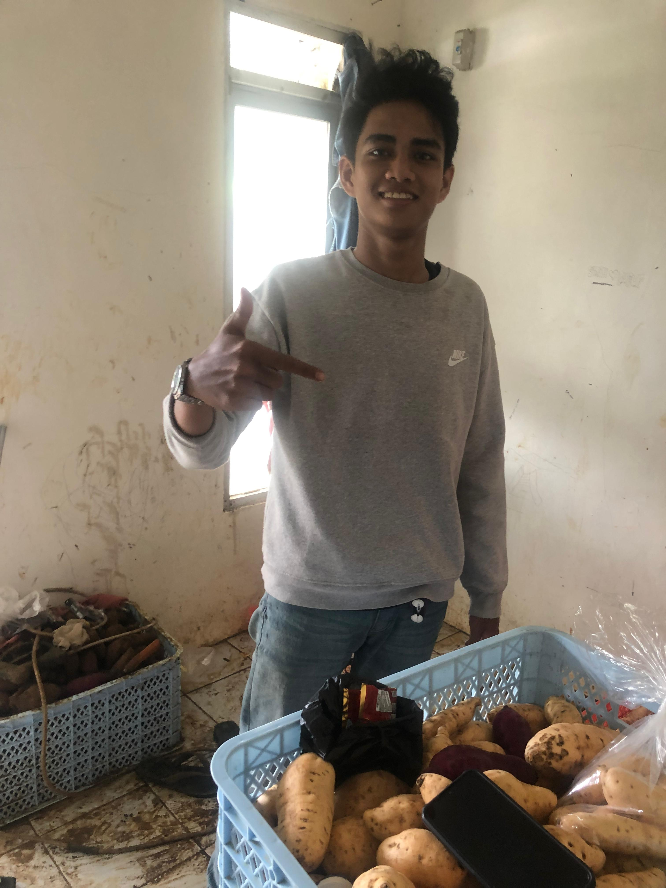
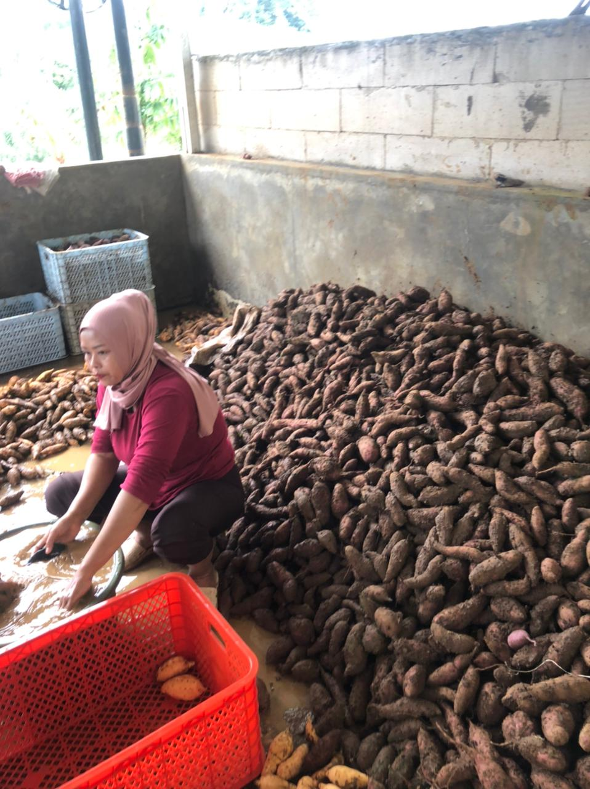

Pasokan Ubi yang Stabil, Terukur, dan Siap untuk Skala Bisnis.
Dari bibit unggul hingga ke tangan Anda. RISEFARM menghadirkan inovasi pertanian ubi yang berkelanjutan, memberdayakan petani lokal, dan menghasilkan panen kualitas premium untuk kebutuhan supermarket & ekspor.

Tentang RISEFARM
Akar Kuat untuk
Pertanian Modern
RISEFARM bukan sekadar lahan pertanian. Kami adalah ekosistem agritech yang berdedikasi untuk merevolusi budidaya ubi di Nusantara. Berdiri dengan visi untuk menciptakan ketahanan pangan yang berkelanjutan dan menyejahterakan petani lokal.
Kami memadukan kearifan lokal dengan teknologi presisi—mulai dari seleksi bibit, pemantauan tanah, hingga distribusi cerdas, memastikan setiap ubi yang sampai ke tangan Anda memiliki kualitas nutrisi dan rasa terbaik.
Mengapa Memilih RISEFARM?
Komitmen kami pada kualitas, lingkungan, dan komunitas membedakan kami di setiap langkah rantai pasok.
Kualitas Premium
Sistem kontrol kualitas ketat memastikan ubi segar, manis, dan kaya nutrisi.
Ramah Lingkungan
Metode pertanian regeneratif yang menjaga kesuburan tanah untuk generasi mendatang.
Agritech Modern
Pupuk racikan berbasis kebutuhan tanah, dan bibit unggul hasil kultur jaringan untuk menciptakan sistem pertanian yang lebih efisien, produktif, dan menghasilkan panen berkualitas tinggi secara konsisten.
Pemberdayaan Lokal
Bermitra dengan puluhan petani desa, memberikan pelatihan dan pembagian hasil yang adil.
Hasil Bumi Terbaik
Produk & Layanan Kami
Dari ubi madu yang manis legit hingga varietas ungu yang kaya antioksidan, kami menyediakan yang terbaik untuk Anda.

Ubi Segar Kualitas Ekspor
Pilihan ubi premium lengkap seperti Cilembu, ungu, Jepang, Murasaki, Pinky, TW, dan lainnya. Seluruh produk melalui proses sortir ketat dengan kualitas terjamin serta bebas dari pestisida kimia berbahaya, sehingga lebih sehat dan siap bersaing di pasar modern.
Pelajari Detail
Ubi Segar Kualitas Supermarket
Kami menyediakan ubi segar berkualitas tinggi yang siap untuk distribusi ke supermarket dan toko ritel.
Pelajari Detail
Sayuran dan buah buahan
Sayuran dan buah buahan segar yang tumbuh dengan metode pertanian organik kami menyediakan kualitas ekspor dan kualitas supermarket (melon, jeruk, wortel, bayam dll).
Pelajari DetailPerjalanan Kualitas
Dari Kebun Ke Meja Anda
Setiap tahap dipantau secara presisi untuk menjamin kualitas terbaik.
1. Pembibitan
Seleksi varietas unggul di fasilitas nursery khusus kami.
2. Penanaman
Perawatan intensif dengan pemupukan organik dan irigasi presisi.
3. Panen & Sortir
Dipanen pada usia optimal, disortir ketat berdasarkan standar mutu.
4. Distribusi
Pengemasan aman dan logistik cepat agar kesegaran tetap terjaga.
Dokumentasi
Melihat Lebih Dekat RISEFARM

Pemberdayaan Petani Lokal



Update RISEFARM
Artikel & Berita Terbaru
Bagikan cerita panen, inovasi pertanian, aktivitas kebun, dan kabar terbaru perusahaan dalam satu halaman yang rapi.
Suara Mitra Kami
"Sejak bermitra dengan RISEFARM, hasil panen lahan saya meningkat secara signifikan. Edukasi pertanian organik yang diberikan sangat mengubah pola pikir kami sebagai petani di desa."

Bapak Sugeng
Ketua Kelompok Tani, Jawa Barat
"Kualitas pasokan ubi madu dari RISEFARM selalu konsisten. Hal ini sangat penting bagi industri pengolahan makanan kami. Pengiriman selalu tepat waktu dan ukurannya presisi."

Ibu Diana
Direktur Pengadaan, PT Nutrisi Maju
Mari Tumbuh Bersama RISEFARM
Apakah Anda petani yang ingin berkembang, atau perusahaan yang membutuhkan pasokan ubi premium berkelanjutan? Kami siap menjadi mitra terbaik Anda.